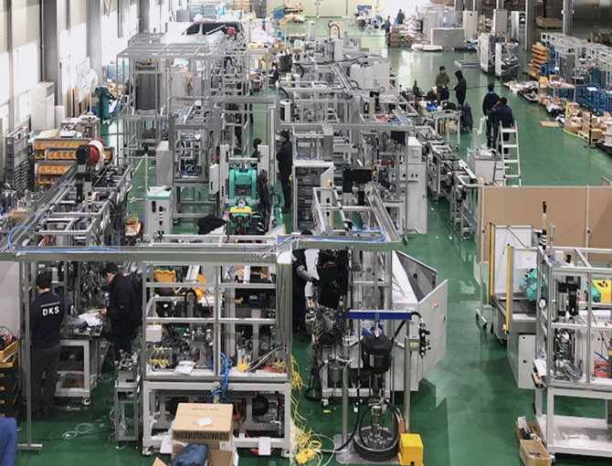
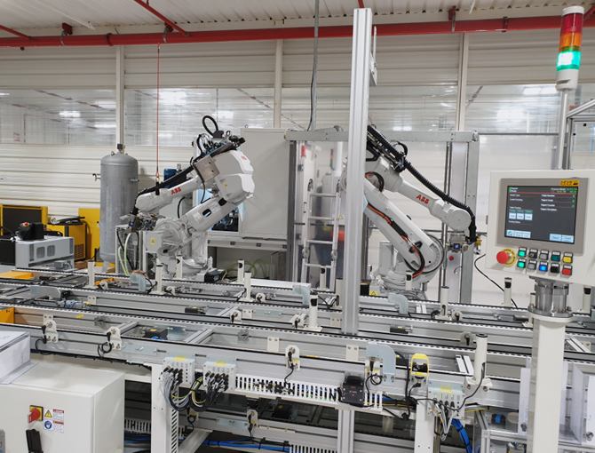
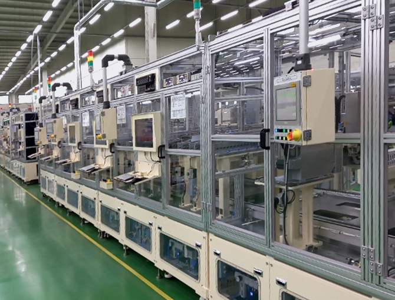

Certification
원본 사이트에 공개된 인증현황을 주요 항목 중심으로 카드화했습니다.
글로벌 강소기업 지정서
중소벤처기업부 · 2019.04.23
기술혁신형 중소기업(Inno-Biz)
등급 A · 중소벤처기업부
소재 · 부품 · 장비 전문기업
한국산업기술평가관리원
벤처기업확인서
혁신성장유형 · 벤처기업확인기관
기업부설연구소 인증서
한국산업기술진흥협회
ISO 9001 / 14001 / 45001
품질·환경·안전보건 경영시스템
Patent Portfolio
| No. | 구분 | 특허명 | 등록/출원번호 | 일자 |
|---|---|---|---|---|
| 1 | 등록 | 비접촉식 벨트 텐션 조절장치를 이용한 텐션 조절방법 | 1012733410000 | 2019.06.04 |
| 2 | 등록 | 전자타입형 조향장치의 비접촉식 벨트 텐션 조절장치개발 | 1011942530000 | 2012.10.18 |
| 3 | 등록 | 전자식 조향장치의 조향센서 유닛 및 이의 조합방법개발 | 1012154620000 | 2012.12.18 |
| 4 | 등록 | 전자제어식 파워스티어링의 구성부품 조립공정 | 1013261630000 | 2013.10.31 |
| 5 | 출원 | 전기자동차용 전동컴프레셔 성능 검사장치 | 1020190115998 | 2019.09.20 |
| 6 | 출원 | 전동 컴프레서에 대한 딥러닝 기반 고장 진단 방법 및 장치 | 1020200018978 | 2020.02.17 |

조향장치 검사 기술
EPS 성능 검사와 조립 공정 특허 기반

전동컴프레서 검사
전기자동차용 전동컴프레셔 성능 검사장치

이차전지 기술
리튬계 이차전지 음전극 제조방법 특허